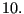

Next: *STATIC Up: Input deck format Previous: *SPECIFIC HEAT Contents
Keyword type: model definition
With this option the force-displacement relationship can be defined for spring elements (cf. Sections 6.2.40,6.2.41 and 6.2.42). There is one required parameter ELSET and there are optional parameters NONLINEAR and ORIENTATION. With the parameter ELSET the element set is referred to for which the spring behavior is defined. This element set should contain spring elements only. With the parameter NONLINEAR the user can specify that the behavior of the spring is nonlinear, default is a linear behavior. Finally, the ORIENTATION parameter can be used to define a local orientation of the spring for SPRING1 and SPRING2 elements.
Please note that for a nonlinear behavior the (force,elongation) pairs have to be entered in ascending order of the elongation. The elongation is defined as the final length minus the initial length. The elongation can be negative, however, it should not be smaller than the initial length of the spring. Extrapolation in the force versus elongation graph is done in a constant way, i.e. the force is kept constant. This leads to a zero tangent and may lead to a singular stiffness matrix. Therefore, the elongation range should be defined large enough to avoid this type of problems.
For SPRING1 and SPRING2 elements the degree of freedom in which the spring acts is entered immediately underneath the *SPRING card. For a SPRINGA element this line is left blank. This is done out of compatibility reasons with ABAQUS. Now, CalculiX deletes any blank lines before reading the input deck. Therefore,the only way for CalculiX to know whether the first line underneath the *SPRING card contains degrees of freedom or spring constant information is to inspect whether the numbers on this line are integers or reals. Therefore, for the *SPRING card the user should painstakingly take care that any real numbers (spring constant, spring force, elongation, temperature) contain a decimal point (“.”, which is a good practice anyway).
First line:
Second line for SPRINGA type elements: enter a blank line
Second line for SPRING1 or SPRING2 type elements:
Following line if the parameter NONLINEAR is not used:
Following sets of lines define the force-displacement curve if the parameter NONLINEAR is active: First line in the first set:
Use as many sets as needed to define complete temperature dependence.
Example: *SPRING,ELSET=Eall blank line 10.
defines a linear spring constant with value 
Example: *SPRING,ELSET=Eall,NONLINEAR 0.,0.,293. 10.,1.,293. 100.,2.,293. 0.,0.,393. 5.,1.,393. 25.,2.,393.
defines a nonlinear spring characterized by a force-displacement curve through (0,0),(10,1),(100,2) for a temperature of 293. and through (0,0),(5,1),(25,2) for a temperature of 393. The first scalar in the couples is the force, the second is the elongation of the spring. This spring behavior applies to all elements in element set Eall. Notice that for displacements outside the defined range the force is kept constant. For instance, in the example above the force for an elongation of 3 at a temperature of 293 will be 100.
Example files: spring1, spring2, spring3, spring4, spring5.